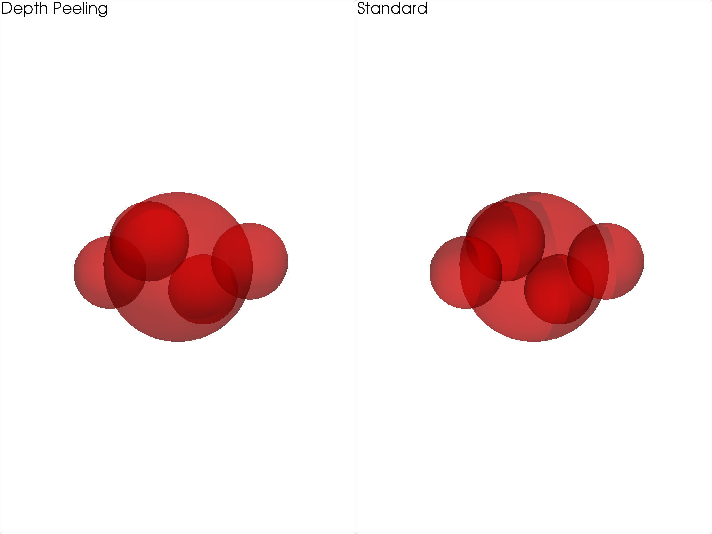
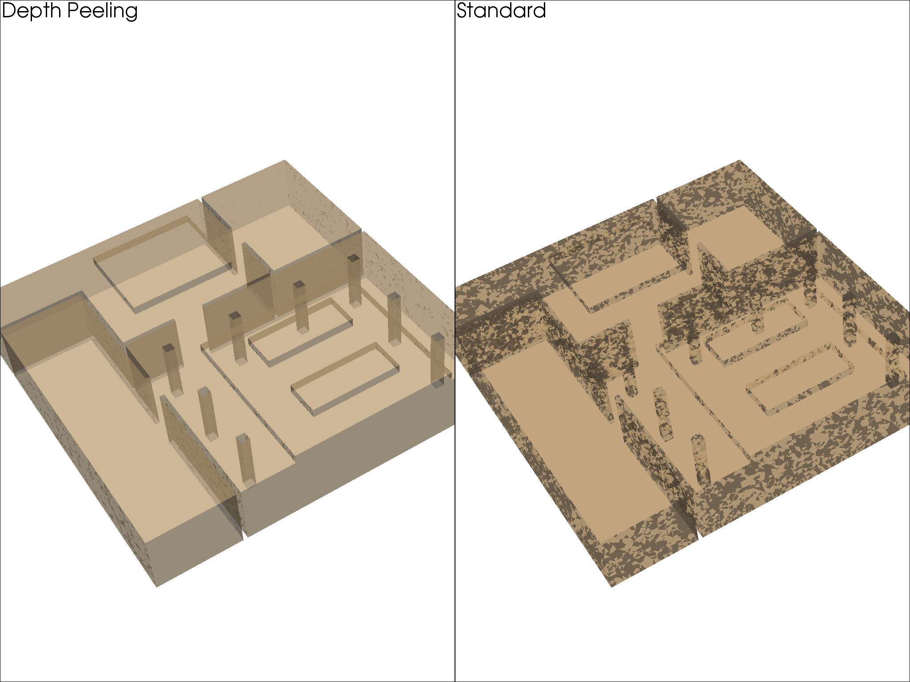
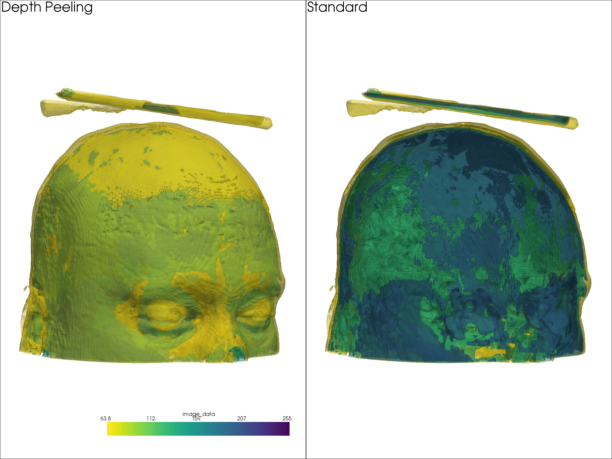

Note
Click here to download the full example code
Depth Peeling¶
Depth peeling is a technique to correctly render translucent geometry.
This is enabled by default in pyvista.rcParams if your VTK version is
less than 8.2.
For this example, we will showcase the difference that depth peeling provides as the justification for why we have enabled this by default.
# sphinx_gallery_thumbnail_number = 2
import pyvista as pv
from pyvista import examples
Turn off depth peeling so we can correctly control it in this example
pv.rcParams["depth_peeling"]["enabled"] = False
centers = [(0, 0, 0), (1, 0, 0), (-1, 0, 0),
(0, 1, 0), (0, -1, 0)]
radii = [1, 0.5, 0.5, 0.5, 0.5]
spheres = pv.MultiBlock()
for i, c in enumerate(centers):
spheres.append(pv.Sphere(center=c, radius=radii[i]))
dargs = dict(opacity=0.5, color="red", smooth_shading=True)
p = pv.Plotter(shape=(1,2), multi_samples=8)
p.add_mesh(spheres, **dargs)
p.enable_depth_peeling(10)
p.add_text("Depth Peeling")
p.subplot(0,1)
p.add_text("Standard")
p.add_mesh(spheres.copy(), **dargs)
p.link_views()
p.camera_position = [(11.7, 4.7, -4.33),
(0.0, 0.0, 0.0),
(0.3, 0.07, 0.9)]
p.show()

Out:
[(11.7, 4.7, -4.33),
(0.0, 0.0, 0.0),
(0.3153704229982046, 0.07358643203291443, 0.946111268994614)]
The following room surfaces example mesh, provided courtesy of Sam Potter has coincident topology and depth rendering helps correctly render those geometries when a global opacity value is used.
room = examples.download_room_surface_mesh()
p = pv.Plotter(shape=(1,2))
p.enable_depth_peeling(number_of_peels=4, occlusion_ratio=0)
p.add_mesh(room, opacity=0.5, color="tan")
p.add_text("Depth Peeling")
p.subplot(0,1)
p.add_text("Standard")
p.add_mesh(room.copy(), opacity=0.5, color="tan")
p.link_views()
p.camera_position = [(43.6, 49.5, 19.8),
(0.0, 2.25, 0.0),
(-0.57, 0.70, -0.42)]
p.show()

Out:
[(43.6, 49.5, 19.8),
(0.0, 2.25, 0.0),
(-0.5724957969333092, 0.7030650137777481, -0.4218390082666489)]
And here is another example wheen rendering many translucent contour surfaces.
mesh = examples.download_brain().contour(5)
cmap = "viridis_r"
p = pv.Plotter(shape=(1,2), multi_samples=4)
p.add_mesh(mesh, opacity=0.5, cmap=cmap)
p.enable_depth_peeling(10)
p.add_text("Depth Peeling")
p.subplot(0,1)
p.add_text("Standard")
p.add_mesh(mesh.copy(), opacity=0.5, cmap=cmap)
p.link_views()
p.camera_position = [(418.3, 659., 53.8),
(90.2, 111.5, 90.0),
(0.03, 0.05, 1.0)]
p.show()

Out:
[(418.3, 659.0, 53.8),
(90.2, 111.5, 90.0),
(0.029949129682617866, 0.04991521613769644, 0.9983043227539289)]
Re-enable depth peeling
pv.rcParams["depth_peeling"]["enabled"] = pv.DEFAULT_THEME["depth_peeling"]["enabled"]
Total running time of the script: ( 4 minutes 59.007 seconds)